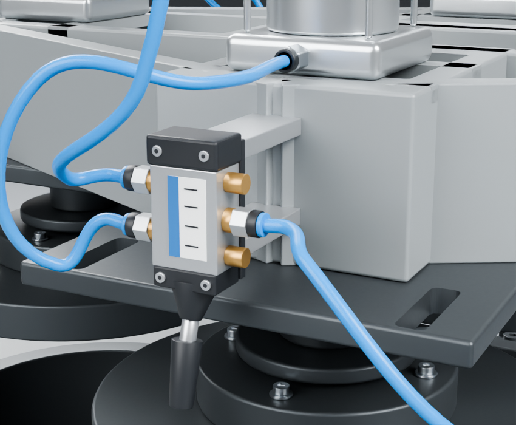
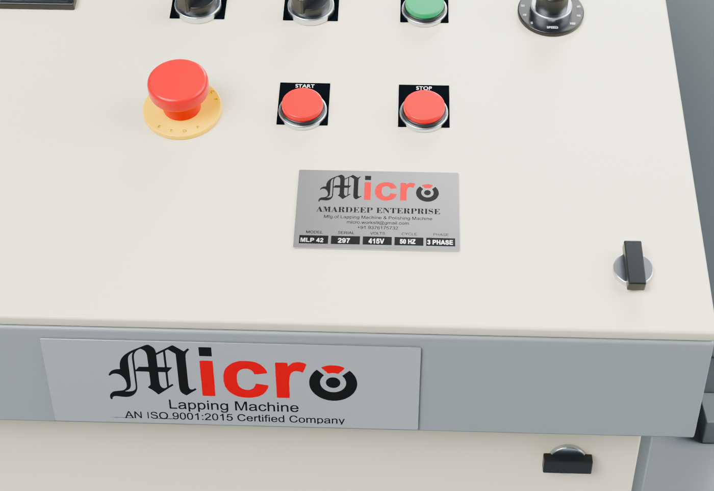

01
The working insert
A circular perforated insert sits within the surrounding ring, beneath the suspended head.
MICRO / MLP 42
Meet the Micro MLP 42 lapping machine. Explore its working assembly, pneumatic controls and every considered detail.
Take a closer lookThe 3D view couldn’t load. You can still explore the machine details below.
Drag to rotate · Scroll to zoom
Built around
the working surface.
02 / THE DETAILS
From the circular working assembly to the operator console, explore the components that define the machine.
A circular perforated insert sits within the surrounding ring, beneath the suspended head.

Three cylinder stations, each with its own manual valve, lever and connected air lines.

A sloped console brings the machine’s buttons, selectors and speed control together.
03 / MACHINE SPECIFICATIONS
Specifications shown on the supplied machine nameplate.
LET’S TALK ABOUT YOUR APPLICATION